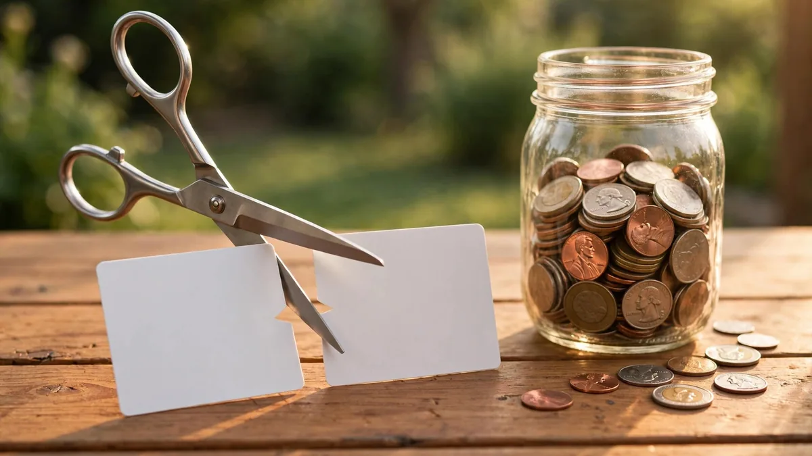

How to Pay Off Credit Card Debt Fast: A Step-by-Step Plan
How to pay off credit card debt fast: stop the balance growing, set one fixed payment, pay in the right order and cut your rate. Worked example.

Your credit card balance feels like it never moves. You pay $150, and next month the balance is barely lower. That is not your imagination. Interest eats most of a small payment, and the rest barely touches what you owe.
This guide shows you how to pay off credit card debt fast with a plan you can start tonight: a full list of what you owe, a fixed monthly payment, a simple order for your cards, and a few ways to cut the interest. No tricks, no loans you did not ask for, just a clear order of steps. Follow them, and a balance that felt permanent starts shrinking every single month.
Why your balance barely moves
What does it mean to pay off credit card debt fast? It means paying a fixed amount above the minimum every month, in a set order, while stopping new charges, so each payment cuts the balance instead of mostly feeding interest.
Credit card debt is expensive debt. In May 2026, the average interest rate on US credit card accounts that were actually being charged interest was 22.15%, according to the Federal Reserve (Federal Reserve data, cited in Motley Fool's credit card debt statistics, August 2026). At that rate, a $5,000 balance costs about $92 a month in interest alone. If your payment is $150, only about $58 goes to the balance. The rest pays interest.
That is why minimum payments are a trap. A minimum payment is set low on purpose, usually a small share of the balance plus that month's interest. Pay only the minimum, and most of your money goes to interest while the balance creeps down. Your statement shows how long minimum-only payments would take, and for most people it is measured in years, not months.
The fix is not complicated. Pay a fixed amount every month, bigger than the minimum. Put the extra money on one card at a time. And stop the interest from growing while you pay. That is the whole plan, and the rest of this guide walks through it.
Step 1: Write down every card you owe
Before you pay anything extra, get the full picture. Open every card app or statement and write down four numbers for each card: the balance, the APR, the minimum payment, and the due date. Fifteen minutes is enough.
Use a table like this one, and fill in your own numbers:
| Card | Balance | APR | Minimum payment | Due date |
|---|---|---|---|---|
| Card 1 | $ | % | $ | |
| Card 2 | $ | % | $ | |
| Card 3 | $ | % | $ | |
| Total | $ |
Add up the balances. That total is your starting number. It might sting. Write it down anyway, because you cannot beat a number you refuse to look at. If tracking this in an app helps, the best free budgeting apps compares free tools that can hold the list for you.
Step 2: Stop the balance from growing
This step is boring, and it is the one most people skip. While you pay off the debt, stop adding to it. Put the cards in a drawer, delete them from shopping apps, and pay for daily spending with debit or cash. If you keep swiping while you pay down, you are filling a bucket with a hole in it.
Two things help. First, give yourself a small buffer, even $200 to $500, in a separate account for small surprises. Without it, the next car repair or medical copay goes straight back on a card. How to build an emergency fund on a small income shows how to start one with small amounts.
Second, do not close the cards yet. Closing a card can shorten your credit history and raise your credit utilization, which can lower your score. Pay them down, leave them open, and keep them out of your wallet. If spending triggers are part of the problem, how to stop impulse spending has a practical system for that.
Step 3: Set one fixed payment you can hit every month
Minimums change as your balance changes, which makes them a moving target. A fixed payment does not move. Look at your budget, find the biggest monthly amount you can pay toward all your cards combined, and commit to it every month, even in a tight month.
If you need to free up money, start with the easy cuts: subscriptions you do not use, food delivery, and impulse buys. How to budget on less than $1,000 a month walks through building a budget around a small income, and the same order works here: essentials first, debt payment second, everything else after.
Pick a number that is honest. A plan you can keep for 12 months beats a heroic plan you quit in month two. If you get a tax refund, a bonus, or cash from selling something, send it to the debt too, but do not count on windfalls. The fixed monthly payment is the engine.
Step 4: Pay in the right order
Pay the minimum on every card, every month, on time. Then send every extra dollar to the card with the highest APR. When that card hits zero, roll its whole payment onto the next-highest APR card. Keep going until only one card is left, then finish it.
Why highest APR first? Interest is the enemy, and the highest-rate card charges the most interest per dollar. Killing it first saves the most money. If you find it easier to stay motivated by clearing a small balance first, that is fine too. The best order is the one you will actually follow for months, not the one that looks best on paper.
Never miss a minimum on any card while you focus on one. A late payment adds a fee, can raise your rate, and can hurt your credit score. Set up autopay for at least the minimum on every card, then make your extra payment manually.
Step 5: Try to lower the interest rate
Every point of interest you cut is money that goes to your balance instead. Try these in order.
First, call your card issuer and ask for a lower APR. This works more often than people expect. Be polite, say you have been a customer for a while, and say you are working on paying the balance down. If they say no, ask again in a few months. The call takes ten minutes, and a lower rate helps every month after.
Second, consider a balance transfer. A balance transfer moves a balance from one card to another, sometimes with a 0% or low promotional rate for a limited time (Consumer Financial Protection Bureau, credit cards key terms). The fee is usually a percentage of the amount you transfer. The math only works if you can pay the transferred balance off before the promo rate ends, and if you stop using the old card. Read the terms, check the fee, and divide the total by the promo months to get the payment you need.
Third, a debt consolidation loan can combine several card balances into one fixed monthly payment, often at a lower rate than cards. This only helps if the rate is truly lower, the payment fits your budget, and you do not run the cards back up. If you consolidate and then spend on the cards again, you end up with the loan plus new card debt.
Skip payday loans and other high-cost borrowing. They charge far more than cards and make the hole deeper.
A worked example: $5,000 gone in 13 months
This is an illustration with made-up numbers. It shows how the plan works in practice.
Say you owe $5,000 across two cards:
- Card A: $1,200 balance, 24% APR, $35 minimum
- Card B: $3,800 balance, 19% APR, $95 minimum
Your fixed debt payment is $450 a month. Card A has the higher APR, so it gets the extra money. You pay the $95 minimum on Card B and $355 on Card A.
Card A month by month, at 24% APR, which is 2% a month:
| Month | Starting balance | Interest | Payment | Ending balance |
|---|---|---|---|---|
| 1 | $1,200.00 | $24.00 | $355.00 | $869.00 |
| 2 | $869.00 | $17.38 | $355.00 | $531.38 |
| 3 | $531.38 | $10.63 | $355.00 | $187.01 |
| 4 | $187.01 | $3.74 | $190.75 | $0.00 |
Card A is gone in four months. Total interest on Card A: $55.75.
Meanwhile Card B got $95 minimums for four months, dropping from $3,800 to about $3,657. Now the full $450 goes to Card B. At 19%, it takes about nine more payments to clear. Total interest on Card B comes to about $527.
Add it up: 13 months, about $580 in total interest, $5,582 paid on $5,000 of debt. The same debt paid at minimums only would have dragged on for years and cost far more in interest. The difference is the fixed payment and the order.
What if you cannot afford the minimums?
Do not hide from it. Call your card issuer before you miss a payment and ask about a hardship program. Issuers sometimes lower your rate or your payment for a few months. It costs nothing to ask, and asking early gives you more options than silence.
If the numbers still do not work, talk to a nonprofit credit counselor. Nonprofit counselors can review your full budget, explain your options, and in some cases set up a debt management plan with lower rates. Look for nonprofit agencies, and avoid companies that charge big upfront fees or promise to erase your debt.
If you are choosing between paying a card and paying rent, buying food, or keeping the lights on, pay the essentials first. A late card payment is bad. An eviction or an empty fridge is worse. Then deal with the card as soon as you can.
5 mistakes that slow you down
| Mistake | Why it hurts | Do this instead |
|---|---|---|
| Paying only the minimum | Most of the payment goes to interest | Pay a fixed amount above the minimum |
| Keeping the cards in your wallet | New charges undo your progress | Use debit or cash while you pay down |
| Closing cards as you pay them off | Can raise utilization and shorten history | Leave them open, unused |
| Taking a payday loan to pay a card | Much higher cost than card interest | Call the issuer or find a counselor |
| Skipping a month when money is tight | Interest keeps growing, and late fees add up | Pay at least the minimum, on time |
Frequently asked questions
What is the fastest way to pay off credit card debt?
Pay a fixed amount above the minimum every month, send the extra to the highest APR card first, stop new charges, and try to lower your rate. Speed comes from the size of the fixed payment and from sticking with it, not from any single trick.
How much should I pay each month toward credit card debt?
As much as your budget allows after essentials, as one fixed number you can hit every month. At the very least, pay every minimum on time. A steady $300 a month beats a $600 month followed by three months of minimums.
Should I pay off one card at a time or spread payments?
Pay the minimum on every card, then put all the extra on one card at a time. Spreading the extra across all your cards keeps every balance alive and wastes money on interest.
Can I negotiate a lower interest rate on my credit card?
Yes, you can ask. Call your issuer, be polite, and say you are working on paying the balance down. There is no promise they will say yes, and if they say no, you can ask again later. A lower rate means more of each payment goes to the balance.
What if I cannot afford my minimum payments?
Call your issuer before you miss a payment and ask about a hardship program. If that is not enough, talk to a nonprofit credit counselor. Pay essentials like rent and food first, then deal with the card as soon as you can.
Does a balance transfer help pay off credit card debt?
It can, if the fee is low, the promo period is long enough to clear the balance, and you stop using the old card. Divide the transferred total, fee included, by the promo months. If that monthly payment fits your budget, the transfer can save real interest. If not, skip it.
Your next step
Tonight, list your cards. Tomorrow, set the fixed payment and the autopay minimums. This week, make the rate-lowering call. That is the whole start, and it takes less than an hour. The debt did not appear in a day, and it will not vanish in one either, but a fixed payment in a set order shrinks it every month. A year from now, you could be looking at a zero balance instead of another statement that barely moves.
Related: Free debt snowball spreadsheet, Debt snowball vs avalanche.
This article is general information, not personal financial advice. Credit card terms and assistance programs differ by country and issuer, so check your own statements and local rules.